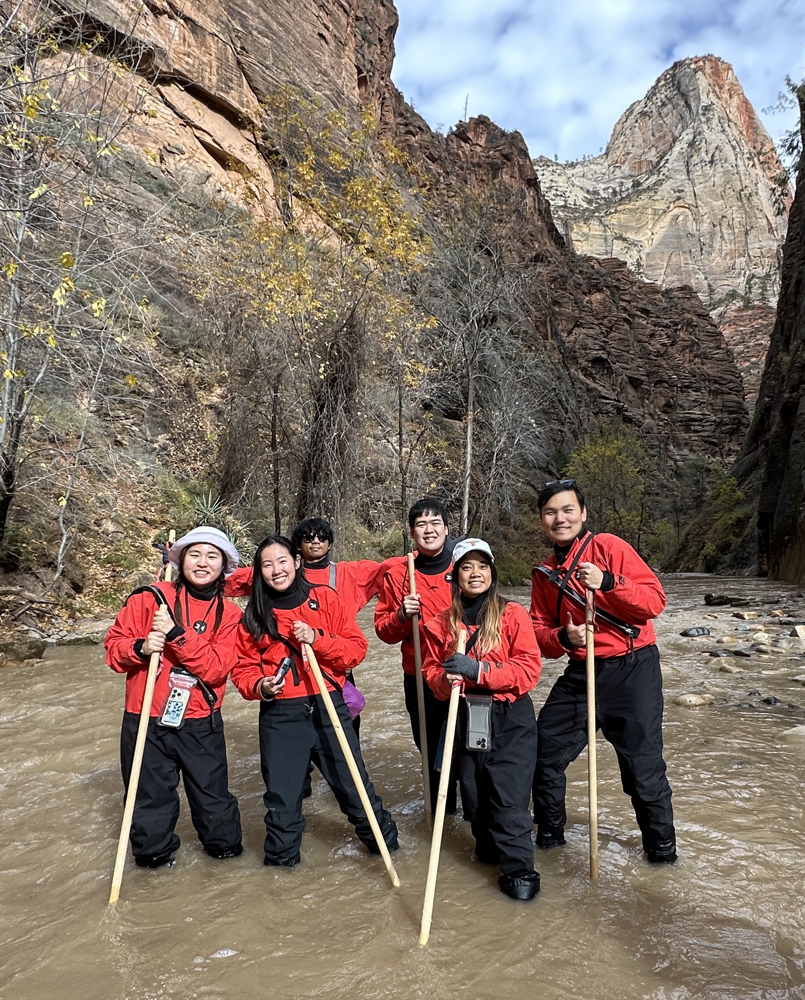
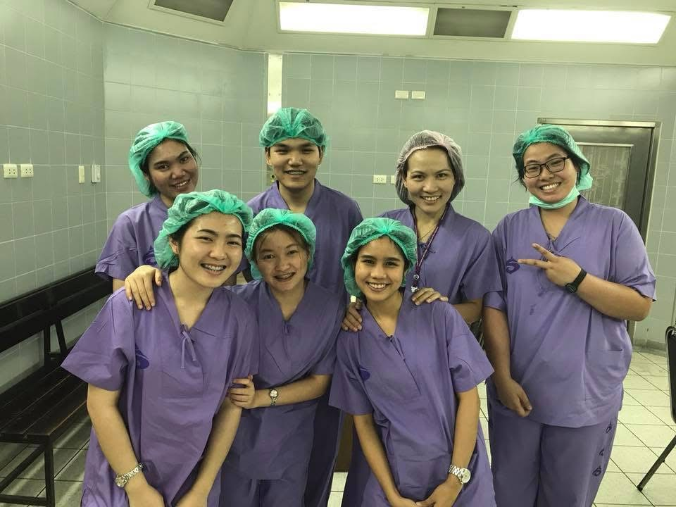

About Me

Nattasit Katchamat (Thai: ณัฏฐสิทธิ์ คัชมาตย์, pronounced [næt.tʰa.sɪt kʌt.tʃa.mæt] in English) was born in 1996 in Phetchabun, Thailand.
He grew up in Mueang Phetchabun, in the central part of the province, where he spent his childhood with friends and participated in activities and competitions ranging from art and language to law and science at the Wittayanukulnaree School. His interest in research took root at a summer research camp hosted by the Faculty of Science at Chiang Mai University. There, he discovered how much he enjoyed the process of scientific inquiry.
In 2014, Nattasit moved to Bangkok to pursue a bachelor’s degree in nursing at the Ramathibodi School of Nursing, Faculty of Medicine Ramathibodi Hospital, Mahidol University. He studied biology, anatomy, and pathophysiology alongside nursing care across the lifespan. A study-abroad experience at Mie Prefectural College of Nursing in Japan gave him a new perspective on how nurses incorporate cultural practices into care, particularly in community health and midwifery.
Nattasit entered clinical training with an interest in developing nursing interventions for people with cancer. A rotation on a pediatric ward shifted his focus. He saw how difficult it could be for children with acute or critical illnesses to tell their nurses what they were feeling, especially when their conditions became life-threatening. Wanting to better understand and respond to those children’s needs, he chose to work in a pediatric intensive care unit (PICU). His interest in research and teaching also led him to apply for the Tonkla Dok Kaew Scholarship. He received the scholarship from the Ramathibodi School of Nursing to support his postgraduate education and prepare him for a faculty role.

In 2021, Nattasit moved to Tokyo to pursue his master’s degree. He deepened his understanding of child health nursing and learned to use nursing theory to guide research. Courses in molecular epidemiology and biostatistics sparked his interest in precision health and helped shape his decision to pursue doctoral study. During his master’s program, he worked on two research projects. The first, Diagnostic Accuracy of Cornell Assessment of Pediatric Delirium to Detect Delirium in the Pediatric Intensive Care Unit: Systematic Review and Meta-analysis, was presented at the 4th Asian Pediatric Intensive Care Medicine Congress. The second, Analysis of Medication Adherence among Children and Young Adults with Cardiovascular Disease using the COM-B Model of Behavior Change: A Scoping Review, explored medication adherence through the lens of behavior change.
After completing his master’s degree, Nattasit returned to the Ramathibodi School of Nursing, where he spent a year teaching before beginning his PhD in nursing at The University of Texas at Austin in 2024. Alongside his doctoral studies, he is pursuing the Quantitative Methods (QM) en-route Master’s program through the Department of Educational Psychology in the College of Education.
A Nursing Journey Across Borders
Nattasit’s interest in how children recover after a stay in the pediatric intensive care unit (PICU) began at the bedside. In 2018, he began working as a pediatric critical care nurse in Thailand, where he practiced for three years before pursuing a master’s degree in Japan. He cared for children with cardiac conditions, respiratory failure, and multiple organ failure. His patients also included children receiving extracorporeal life support and those receiving palliative care. A rotation in the pediatric cardiology clinic broadened his understanding of how children with congenital and acquired heart disease are cared for during treatment and at home. These experiences continue to shape the questions he asks about recovery after critical illness.
Nattasit began sharing his critical care experience as a preceptor for an intensive care nurse from Bhutan through Mahidol University’s Capacity Building for Clinical Nurse Specialist (CNS): Learning Experiences in Thailand program. His teaching later expanded from one-on-one mentorship to the classroom. In 2022, he lectured in the Pediatric Nursing Acute & Critical Care course at Ramathibodi Hospital in Bangkok, Thailand.
After earning his master’s degree, Nattasit served as an assistant instructor in the Division of Pediatric Nursing at the Ramathibodi School of Nursing, Faculty of Medicine Ramathibodi Hospital, Mahidol University. In 2024, he taught in both classroom and clinical settings. That year, Kunming Medical University in China also invited him to teach nursing care for critically ill patients. He began his PhD at The University of Texas at Austin in 2024 and continues to draw on his clinical and teaching experience as a teaching assistant for Communication in Health Care Settings (N310).
Awards
In 2018, during his Bachelor of Science in Nursing studies at Mahidol University in Thailand, Nattasit received two honors. The Nurses Association of Thailand awarded him the Certificate of Outstanding Academic, Activities, and Nursing Performance, and the Faculty of Medicine Ramathibodi Hospital at Mahidol University awarded him the Certificate of Outstanding Activities Performance. In 2023, while pursuing his master’s degree in nursing science at St. Luke’s International University in Tokyo, Japan, he received The President’s Encouragement Award from the Graduate School of Nursing Science.